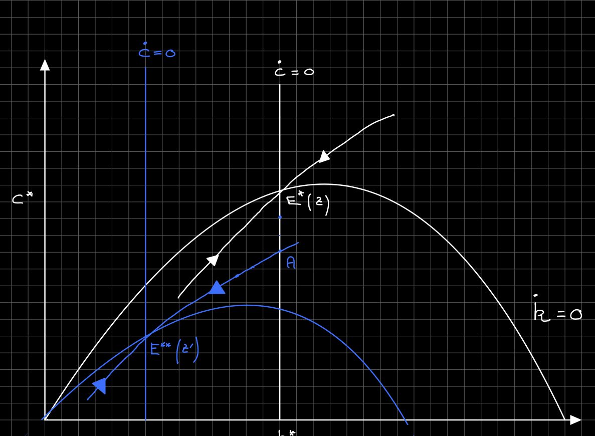
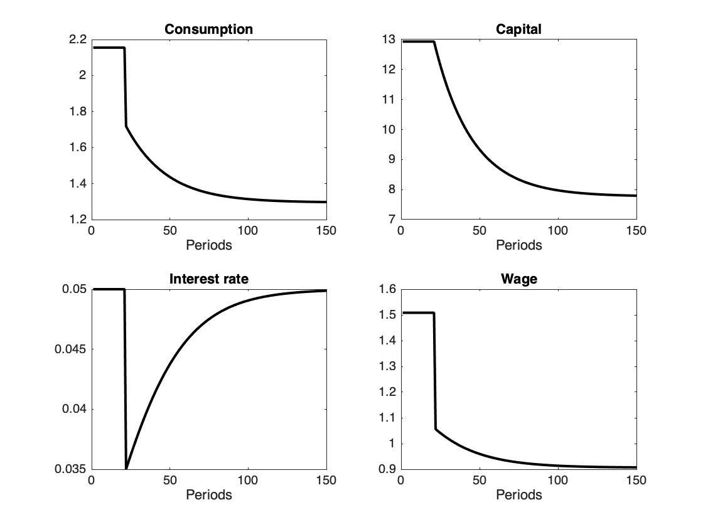
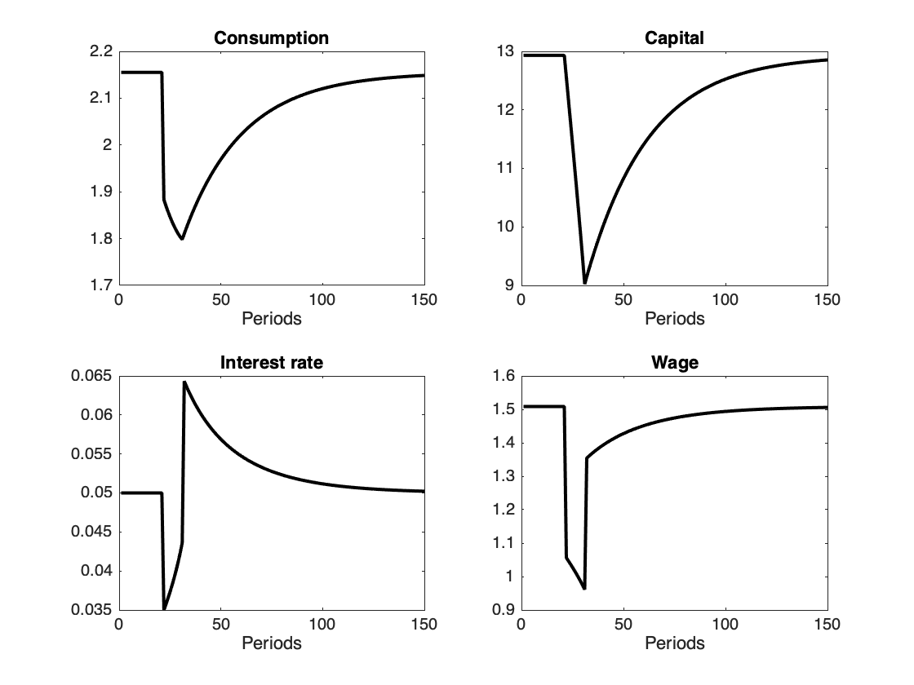
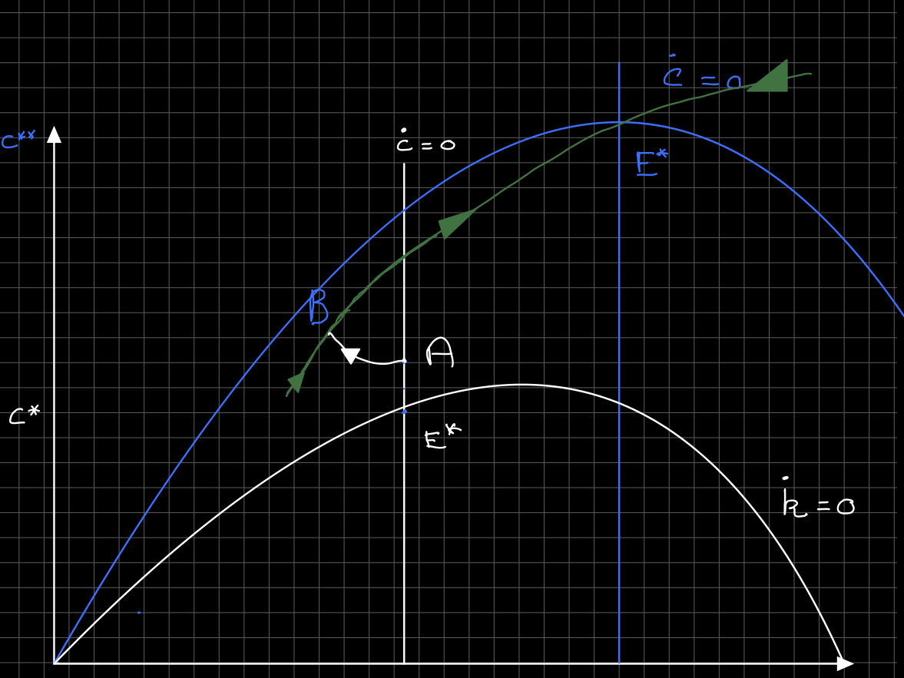
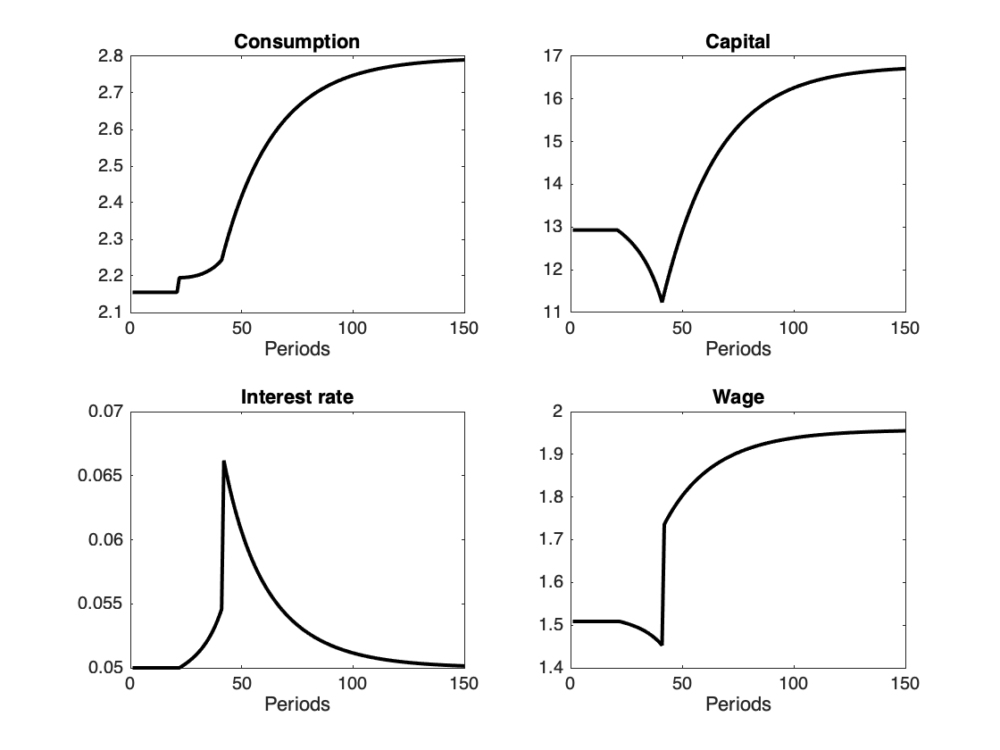
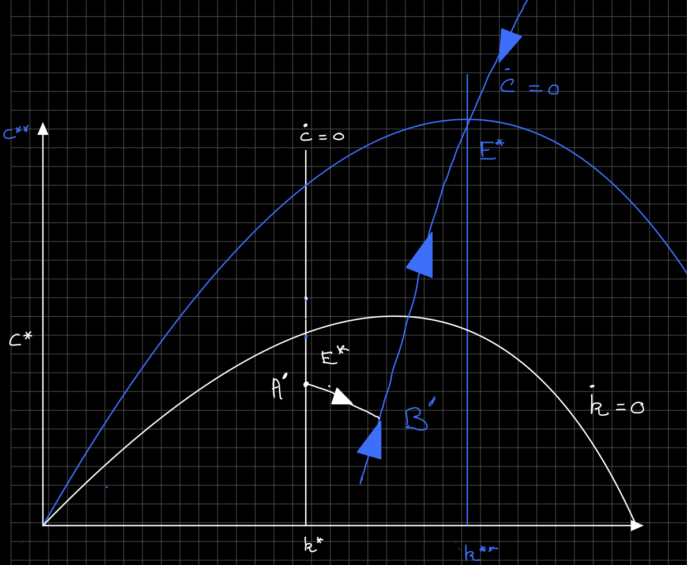
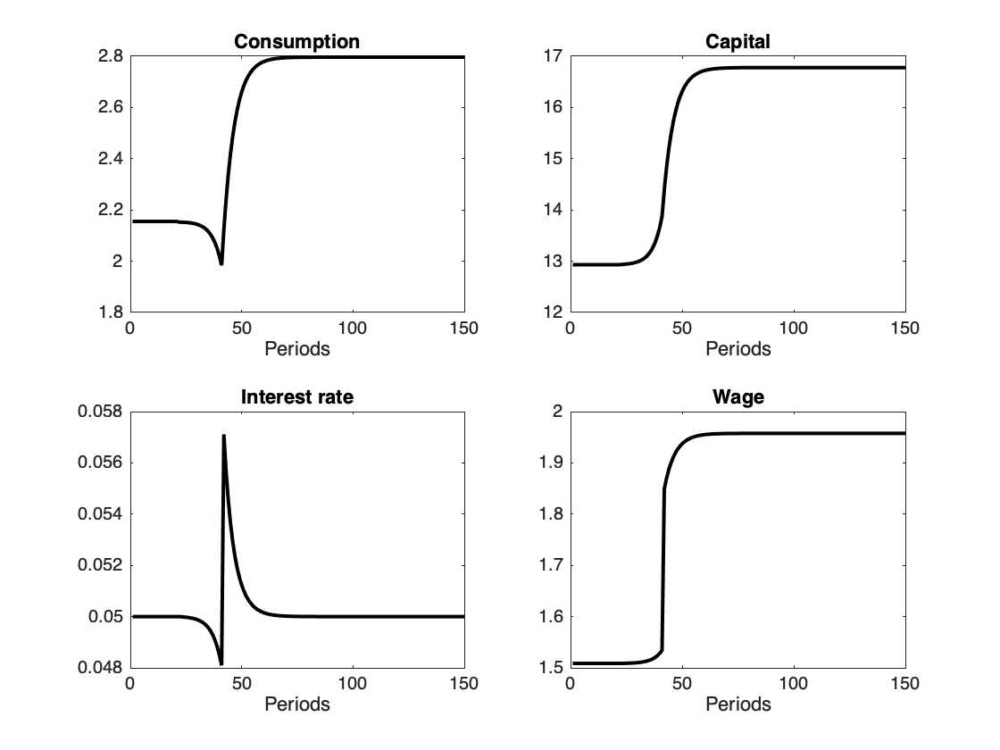

<!doctype html>
<html lang="en">

	<head>
		<meta charset="utf-8">

		<title>reveal.js - Class 4</title>

		<link rel="stylesheet" href="plugin/reveal.css">
		<link rel="stylesheet" href="plugin/black2.css" id="theme">
        <link rel="stylesheet" href="plugin/monokai.css">
        <link rel="stylesheet" href="plugin/title-footer.css">
       
	</head>

	<body>

		<div class="reveal">

			<div class="slides">


                <!-- Slides are separated by three dashes (quick 'n dirty regular expression) -->
                <section data-markdown data-separator="\n---\n" data-separator-vertical="^\n--\n">
                    <script type="text/template">
                        <!-- .slide: style="text-align: left;" -->
                        ## Macroeconomic Theory
                        ### Francesco Franco - Nova SBE
                        #### T3 2021 

                        ---

                        <!-- .slide: style="text-align: left;" -->
                        ### Shocks in the Ramsey model
                        #### Unexpected permanent shocks
                        Consider a permanent shock to TFP
                        so that $z$ decreases to $z'$ in
                        period $0$.
                        In this case the competive equilibrium
                        dynamics correspond to the dynamics of
                        the economy with TFP $z$ from $[0, \infty)$.

                        ---
                        #### Unexpected permanent shocks
                        <center></center>

                        ---
                        <!-- .slide: style="text-align: left;" -->
                        #### Unexpected permanent shocks

                        The solution path is 
                        
                        $$E\^* - A - E\^{**}$$

                        so consumption jumps down to $A$ at
                        that point the consumption continues to decrease
                        with capital along the saddle path
                        for the blue dynamics.
                        
                        ---

                        <!-- .slide: style="text-align: left;" -->
                        #### Unexpected permanent shocks
                        
                        The negative shock happens at $t=0$ and is permanent.

                        <center></center>

                        ---

                        <!-- .slide: style="text-align: left;" -->
                     
                        #### Unexpected temporary shocks
                        Consider a temporary shock to TFP
                        so that $z$ decreases to $z'$ from
                        period $0$ to period $T$.
                        In this case the competive equilibrium
                        dynamics correspond to the dynamics of
                        the economy with TFP $z'$ from $[0, T)$ and
                        of the economy with TFP $z$ from $[T, \infty)$

                        ---

                        <!-- .slide: style="text-align: left;" -->
                        #### Unexpected temporary shocks
                        <center></center>
                        ---

                        <!-- .slide: style="text-align: left;" -->
                        #### Unexpected temporary shocks

                        The solution path is 
                        
                        $$E\^* - C - D- E\^*$$

                        so consumption jumps down to $C$ at
                        that point the consumption continues to decrease
                        fibre capital along what is an explosive
                        path for the blue dynamics.
                        the path $C$ - $D$ is actually the only explosive
                        path under the blue dynamics that crosses
                        $D$. at time $T$ and put the economy
                        on the saddle path that goes back to $E^\*$.

                        ---
                        <!-- .slide: style="text-align: left;" -->
                        #### Unexpected temporary shocks
                        
                        The negative shock happens at $t=10$ and lasts until $t=20$

                        <center></center>

                        ---
                        
                        <!-- .slide: style="text-align: left;" -->
                        #### Unexpected temporary shocks

                        Consider the alternative path where the
                        initial jump would go to $A$ . This would
                        be the solution after a permanent shock as
                        then the economy would be on the saddle
                        path that goes to $E\^{**}$. However in this
                        case at time T the economy would be
                        say at $B$ and from there on follow
                        an explosive path of the first equilibrium.

                        ---
                        
                        <!-- .slide: style="text-align: left;" -->
                        #### Unexpected temporary shocks

                        This solution is not immediate to see from the equations and shows the advantage
                        of working with tools such as the phase diagram.
                        The graph below plots the behavior of the endogenous variables after the transitory shock.
                        ---

                        <!-- .slide: style="text-align: left;" -->
                    
                        #### Unexpected temporary shocks
                        
                        The neagtive shock happens at $t=10$ and lasts until $t=20$

                        <center></center>
                        
                        ---

                        <!-- .slide: style="text-align: left;" -->
                        #### Permanent expected shocks

                        Consider now a different shock where agents expect $z$ to increase in $T$
                        periods. Agents react immediately to the "news" shock and the solution requires
                        that they find themselves on the final saddle path at time $T$.

                        ---

                        <!-- .slide: style="text-align: left;" -->
                        #### Permanent expected shocks

                        <center></center>
                        
                        ---

                        <!-- .slide: style="text-align: left;" -->
                        #### Permanent expected shocks

                        The solution path is 

                        $$E\^* - A - B - E\^{**}$$

                        Consumption jumps to $A$, follows the unique explosive path that crosses the green saddle path at
                        $T$ (point $B$).
                        ---

                        <!-- .slide: style="text-align: left;" -->
                        #### Permanent expected shocks

                        The endogenous variables have the following dynamics

                        <center></center>
                        

                        ---

                        <!-- .slide: style="text-align: left;" -->
                        #### Permanent expected shocks

                        Note that there could be another solution: with a very high intertemporal substitution
                        the saddle path would be very steep causing consumption to fall initially. The adjustment would also be much faster.

                        ---

                        <!-- .slide: style="text-align: left;" -->
                        #### Permanent expected shocks

                        <center></center>
                        
                        ---
                        <!-- .slide: style="text-align: left;" -->
                        #### Permanent expected shocks

                        In this second case the endogenous variables have the following dynamics

                        <center></center>
                        

                
                        
                    </script>
                </section>

            </div>
		</div>

		<script src="plugin/reveal.js"></script>
        <script src="plugin/markdown.js"></script>
        <script src="plugin/highlight.js"></script>
        <script src="plugin/notes.js"></script>
        <script src="plugin/plugin.js"></script>
        <script src="plugin/math.js"></script>
        <script src="plugin/plugin.js"></script>
        <script src="plugin/menu.js"></script>
        <script src="plugin/pdfexport.js"></script>

		<script>

			Reveal.initialize({
				controls: true,
				progress: true,
				history: true,
                center: true,
                touch: true,
                dependencies:
                [
                    { src: 'plugin/title-footer.js', async: true, callback: function() { title_footer.initialize(); } }
                ],
                math: {
                    mathjax: 'https://cdn.jsdelivr.net/gh/mathjax/mathjax@2.7.8/MathJax.js',
                    config: 'TeX-AMS_HTML-full',
                    // pass other options into `MathJax.Hub.Config()`
                    TeX: { Macros: { RR: "{\\bf R}" } }
                    },
        
                chalkboard: {
                    boardmarkerWidth: 3,
                    chalkWidth: 3,
                    chalkEffect: 0.0,
                    src: null,
                    readOnly: false,
                    toggleChalkboardButton: { left: "90px", bottom: "30px", top: "auto", right: "auto" },
                    toggleNotesButton: { left: "60px", bottom: "30px", top: "auto", right: "auto" },
                    transition: 800,
                    theme: "whiteboard",
                    background: [ 'rgba(127,127,127,.1)' , path + 'img/blackboard.png' ],
                    //grid: { color: 'rgb(50,50,10,0.5)', distance: 80, width: 0.5},
                    eraser: { src: path + 'img/sponge.png', radius: 20},
                    boardmarkers : [
                            { color: 'rgba(255,255,255,0.5)', cursor: 'url(' + path + 'img/chalk-white.png), auto'},
                            { color: 'rgba(30,144,255, 1)', cursor: 'url(' + path + 'img/boardmarker-blue.png), auto'},
                            { color: 'rgba(220,20,60,1)', cursor: 'url(' + path + 'img/boardmarker-red.png), auto'},
                            { color: 'rgba(50,205,50,1)', cursor: 'url(' + path + 'img/boardmarker-green.png), auto'},
                            { color: 'rgba(255,140,0,1)', cursor: 'url(' + path + 'img/boardmarker-orange.png), auto'},
                            { color: 'rgba(150,0,20150,1)', cursor: 'url(' + path + 'img/boardmarker-purple.png), auto'},
                            { color: 'rgba(255,220,0,1)', cursor: 'url(' + path + 'img/boardmarker-yellow.png), auto'}
                    ],
                    chalks: [
                            { color: 'rgba(255,255,255,0.5)', cursor: 'url(' + path + 'img/chalk-white.png), auto'},
                            { color: 'rgba(96, 154, 244, 0.5)', cursor: 'url(' + path + 'img/chalk-blue.png), auto'},
                            { color: 'rgba(237, 20, 28, 0.5)', cursor: 'url(' + path + 'img/chalk-red.png), auto'},
                            { color: 'rgba(20, 237, 28, 0.5)', cursor: 'url(' + path + 'img/chalk-green.png), auto'},
                            { color: 'rgba(220, 133, 41, 0.5)', cursor: 'url(' + path + 'img/chalk-orange.png), auto'},
                            { color: 'rgba(220,0,220,0.5)', cursor: 'url(' + path + 'img/chalk-purple.png), auto'},
                            { color: 'rgba(255,220,0,0.5)', cursor: 'url(' + path + 'img/chalk-yellow.png), auto'}
                    ]
                },
                

				plugins: [ RevealMarkdown, RevealHighlight, RevealNotes,RevealMath, RevealMenu, RevealChalkboard, PdfExport]
			});

		</script>

	</body>
</html>
